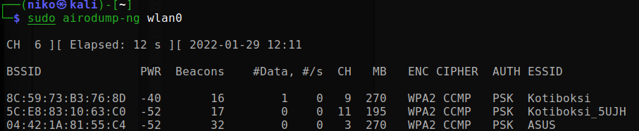
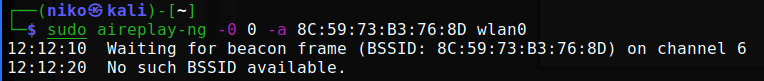

DoS attack - Signal jamming
Introduction
I used Huawei Matebook with AMD Ryzen 5 processor and Kali Linux 64-bit operating system installed in baremetal to attack my own router. Tool for jamming the signal I used Aircrack-ng, which is collection of tools for WiFi security (more info: www.aircrack-ng.org. Everything I did was done with sudo priviledges.
First step was to turn wireless NIC to monitor mode, so I could listen the signals around me. The interface needed to be turned off to be able to change the settings, to do so I did:
- Turn off the interface: ifconfig [interface] down
- Change the mode from managed to monitor: iwconfig [interface] mode monitor
- Turn back on: ifconfig [interface] up
After setting the NIC to monitor mode, I killed all the processes that might interfere aircrack-ng; I gave a command airmon-ng check kill
Now I was ready to scan the aroundings with command airmon-ng [interface] 
and perform a deauthentication attack withcommand aireplay -0 0 -a [BSSID] [interface]
At first I kept receiving a message:
After changing the channel I was able to to the deathentication:

Conclusion
I was able to jam my own WiFi network and disconnect most of my devices from the internet (not all). The whole process was quite easy to implement. However I had a difficulties with the channel settings, but changing it manually fixed the problem.
Following devices in the same network that I couldn't disconnect from internet:
- Acer Aspire Intel quad core processor with Windows 10 64-bit operating system
- Philips PUS9560 smart tv
Monitoring worked beacause WiFi sends broadcast messages to its aroundings that could be listened. APs works in half-duplex mode so with deauth attack I was able to jam the signal